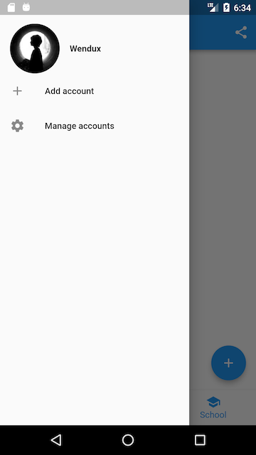
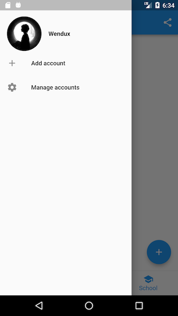

5.7 页面骨架（Scaffold）
Material 组件库提供了丰富多样的组件，本节介绍一下最常用的 Scaffold 组件，其余的读者可以自行查看文档或 Flutter Gallery 中 Material 组件部分的示例。
注意：Flutter Gallery是Flutter官方提供的Flutter Demo，源码位于flutter源码中的examples目录下，笔者强烈建议用户将Flutter Gallery示例跑起来，它是一个很全面的Flutter示例应用，是非常好的参考Demo，也是笔者学习Flutter的第一手资料。
5.7.1 Scaffold
一个完整的路由页可能会包含导航栏、抽屉菜单(Drawer)以及底部 Tab 导航菜单等。如果每个路由页面都需要开发者自己手动去实现这些，这会是一件非常麻烦且无聊的事。幸运的是，Flutter Material 组件库提供了一些现成的组件来减少我们的开发任务。Scaffold 是一个路由页的骨架，我们使用它可以很容易地拼装出一个完整的页面。
实例
我们实现一个页面，它包含：
- 一个导航栏
- 导航栏右边有一个分享按钮
- 有一个抽屉菜单
- 有一个底部导航
- 右下角有一个悬浮的动作按钮
最终效果如图5-18、图5-19所示：
 

实现代码如下：
class ScaffoldRoute extends StatefulWidget {
@override
_ScaffoldRouteState createState() => _ScaffoldRouteState();
}
class _ScaffoldRouteState extends State<ScaffoldRoute> {
int _selectedIndex = 1;
@override
Widget build(BuildContext context) {
return Scaffold(
appBar: AppBar( //导航栏
title: Text("App Name"),
actions: <Widget>[ //导航栏右侧菜单
IconButton(icon: Icon(Icons.share), onPressed: () {}),
],
),
drawer: MyDrawer(), //抽屉
bottomNavigationBar: BottomNavigationBar( // 底部导航
items: <BottomNavigationBarItem>[
BottomNavigationBarItem(icon: Icon(Icons.home), title: Text('Home')),
BottomNavigationBarItem(icon: Icon(Icons.business), title: Text('Business')),
BottomNavigationBarItem(icon: Icon(Icons.school), title: Text('School')),
],
currentIndex: _selectedIndex,
fixedColor: Colors.blue,
onTap: _onItemTapped,
),
floatingActionButton: FloatingActionButton( //悬浮按钮
child: Icon(Icons.add),
onPressed:_onAdd
),
);
}
void _onItemTapped(int index) {
setState(() {
_selectedIndex = index;
});
}
void _onAdd(){
}
}
上面代码中我们用到了如下组件：
| 组件名称 | 解释 |
|---|---|
| AppBar | 一个导航栏骨架 |
| MyDrawer | 抽屉菜单 |
| BottomNavigationBar | 底部导航栏 |
| FloatingActionButton | 漂浮按钮 |
下面我们来分别介绍一下它们。
5.7.2 AppBar
AppBar是一个Material风格的导航栏，通过它可以设置导航栏标题、导航栏菜单、导航栏底部的Tab标题等。下面我们看看AppBar的定义：
AppBar({
Key? key,
this.leading, //导航栏最左侧Widget，常见为抽屉菜单按钮或返回按钮。
this.automaticallyImplyLeading = true, //如果leading为null，是否自动实现默认的leading按钮
this.title,// 页面标题
this.actions, // 导航栏右侧菜单
this.bottom, // 导航栏底部菜单，通常为Tab按钮组
this.elevation = 4.0, // 导航栏阴影
this.centerTitle, //标题是否居中
this.backgroundColor,
... //其他属性见源码注释
})
如果给Scaffold添加了抽屉菜单，默认情况下Scaffold会自动将AppBar的leading设置为菜单按钮（如图5-8所示），点击它便可打开抽屉菜单。如果我们想自定义菜单图标，可以手动来设置leading，如：
Scaffold(
appBar: AppBar(
title: Text("App Name"),
leading: Builder(builder: (context) {
return IconButton(
icon: Icon(Icons.dashboard, color: Colors.white), //自定义图标
onPressed: () {
// 打开抽屉菜单
Scaffold.of(context).openDrawer();
},
);
}),
...
)
代码运行效果如图5-20所示：

可以看到左侧菜单已经替换成功。
代码中打开抽屉菜单的方法在ScaffoldState中，通过Scaffold.of(context)可以获取父级最近的Scaffold 组件的State对象。
5.7.3 抽屉菜单Drawer
Scaffold的drawer和endDrawer属性可以分别接受一个Widget来作为页面的左、右抽屉菜单。如果开发者提供了抽屉菜单，那么当用户手指从屏幕左（或右）侧向里滑动时便可打开抽屉菜单。本节开始部分的示例中实现了一个左抽屉菜单MyDrawer，它的源码如下：
class MyDrawer extends StatelessWidget {
const MyDrawer({
Key? key,
}) : super(key: key);
@override
Widget build(BuildContext context) {
return Drawer(
child: MediaQuery.removePadding(
context: context,
//移除抽屉菜单顶部默认留白
removeTop: true,
child: Column(
crossAxisAlignment: CrossAxisAlignment.start,
children: <Widget>[
Padding(
padding: const EdgeInsets.only(top: 38.0),
child: Row(
children: <Widget>[
Padding(
padding: const EdgeInsets.symmetric(horizontal: 16.0),
child: ClipOval(
child: Image.asset(
"imgs/avatar.png",
width: 80,
),
),
),
Text(
"Wendux",
style: TextStyle(fontWeight: FontWeight.bold),
)
],
),
),
Expanded(
child: ListView(
children: <Widget>[
ListTile(
leading: const Icon(Icons.add),
title: const Text('Add account'),
),
ListTile(
leading: const Icon(Icons.settings),
title: const Text('Manage accounts'),
),
],
),
),
],
),
),
);
}
}
抽屉菜单通常将Drawer组件作为根节点，它实现了Material风格的菜单面板，MediaQuery.removePadding可以移除Drawer默认的一些留白（比如Drawer默认顶部会留和手机状态栏等高的留白），读者可以尝试传递不同的参数来看看实际效果。抽屉菜单页由顶部和底部组成，顶部由用户头像和昵称组成，底部是一个菜单列表，用ListView实现，关于ListView我们将在6.3节中详细介绍。
5.7.4 FloatingActionButton
FloatingActionButton是Material设计规范中的一种特殊Button，通常悬浮在页面的某一个位置作为某种常用动作的快捷入口，如本节示例中页面右下角的"➕"号按钮。我们可以通过Scaffold的floatingActionButton属性来设置一个FloatingActionButton，同时通过floatingActionButtonLocation属性来指定其在页面中悬浮的位置，这个比较简单，不再赘述。
5.7.5 底部Tab导航栏
我们可以通过Scaffold的bottomNavigationBar属性来设置底部导航，如本节开始示例所示，我们通过Material组件库提供的BottomNavigationBar和BottomNavigationBarItem两种组件来实现Material风格的底部导航栏。可以看到上面的实现代码非常简单，所以不再赘述，但是如果我们想实现如图5-21所示效果的底部导航栏应该怎么做呢？

Material组件库中提供了一个BottomAppBar 组件，它可以和FloatingActionButton配合实现这种“打洞”效果，源码如下：
bottomNavigationBar: BottomAppBar(
color: Colors.white,
shape: CircularNotchedRectangle(), // 底部导航栏打一个圆形的洞
child: Row(
children: [
IconButton(icon: Icon(Icons.home)),
SizedBox(), //中间位置空出
IconButton(icon: Icon(Icons.business)),
],
mainAxisAlignment: MainAxisAlignment.spaceAround, //均分底部导航栏横向空间
),
)
可以看到，上面代码中没有控制打洞位置的属性，实际上，打洞的位置取决于FloatingActionButton的位置，上面FloatingActionButton的位置为：
floatingActionButtonLocation: FloatingActionButtonLocation.centerDocked,
所以打洞位置在底部导航栏的正中间。
BottomAppBar的shape属性决定洞的外形，CircularNotchedRectangle实现了一个圆形的外形，我们也可以自定义外形，比如，Flutter Gallery示例中就有一个“钻石”形状的示例，读者感兴趣可以自行查看。
5.7.6 页面 body
最后就是页面的 Body 部分了，Scaffold 有一个 body 属性，接收一个 Widget，我们可以传任意的 Widget ，在下一章中，我们会介绍 TabBarView，它是一个可以进行页面切换的组件，在多 Tab 的 App 中，一般都会将 TabBarView 作为 Scaffold 的 Body。